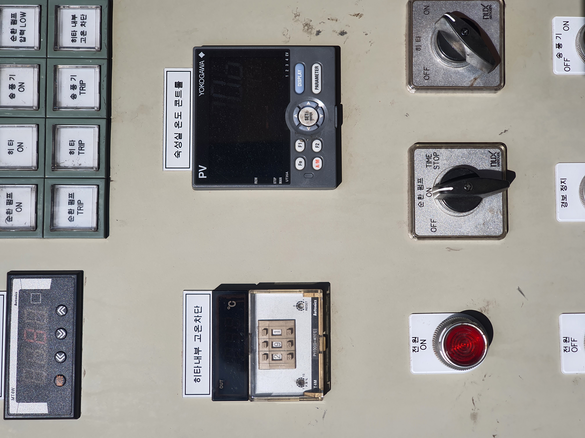
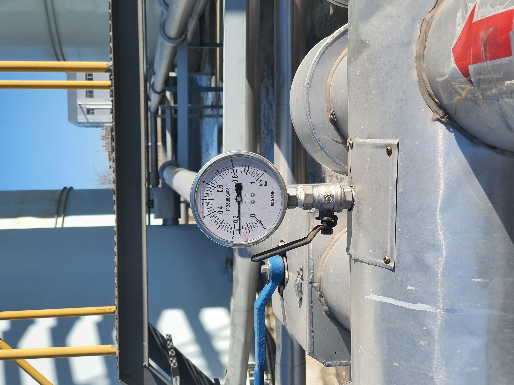
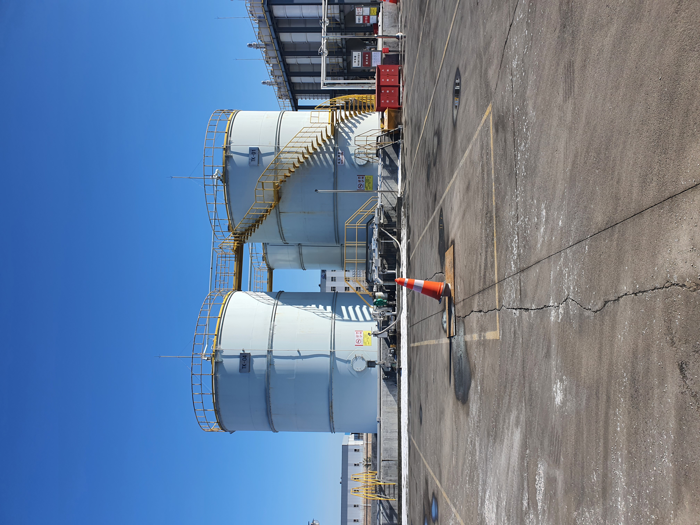
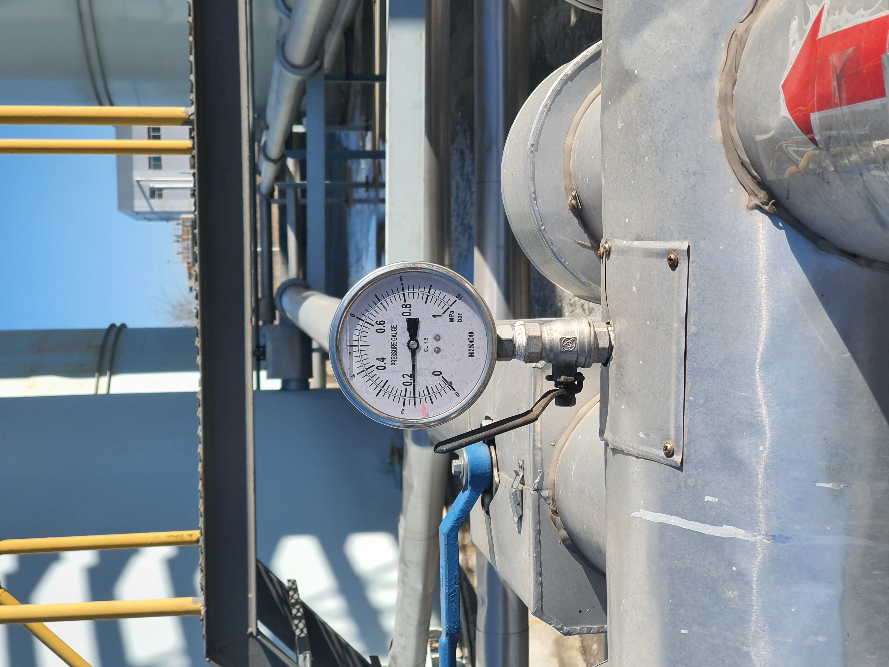
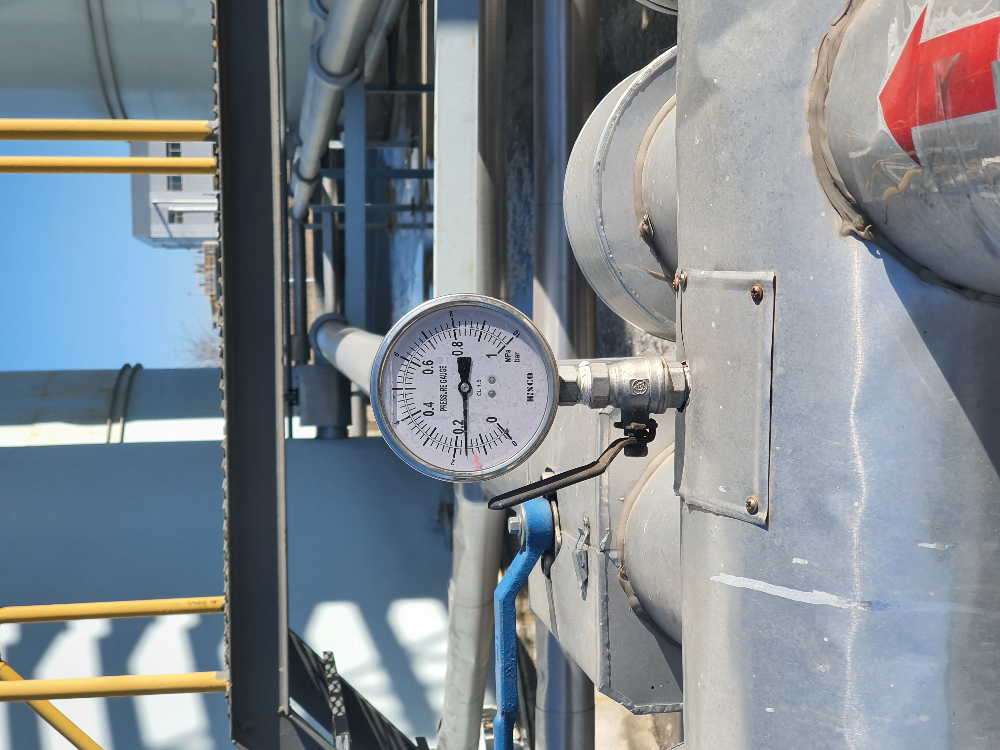
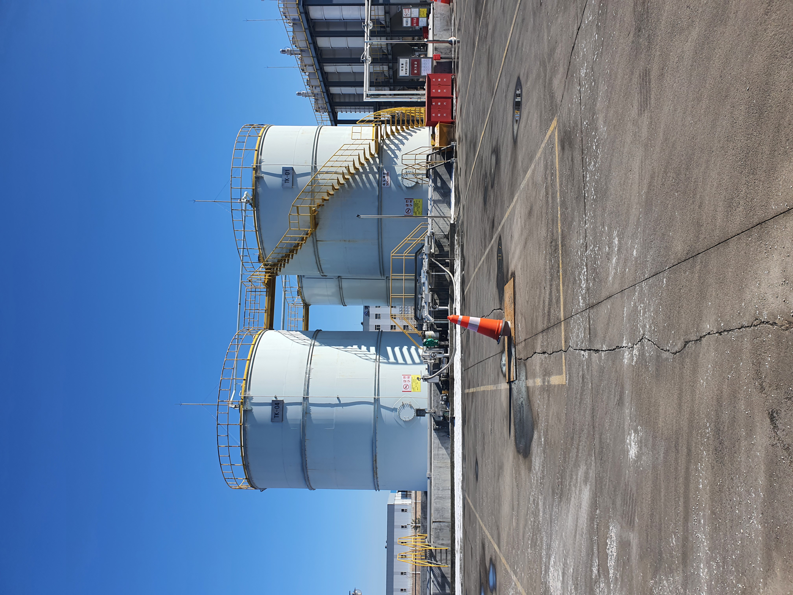
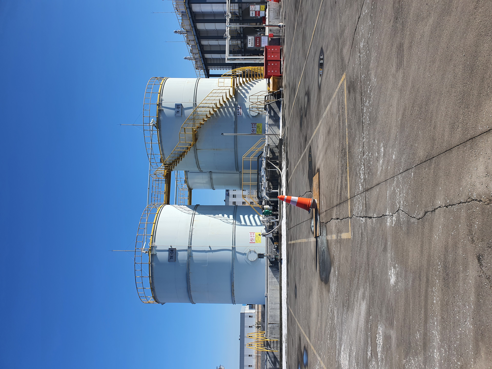

(Un)group
Delete
Cut
Copy
Paste
Show
Print
Export
Import



Collapse All
Expand All
Enter
Exit
- Drag an image from the sidebar to the graph
- Doubleclick on a vertex or edge to edit
- Shift- or Rightclick and drag for panning
- Move the mouse over a cell to see a tooltip
- Click and drag a vertex to move and connect


 


 
